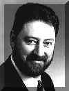

| During
General Synod, more than 20 people and three professional video cameras covered the
General Synod plenary, directed from a mobile trailer parked nearby where technicians also
operate lights and the sound system. These shows included interviews that take General
Synod fans behind the scenes with feature segments and a series on the host diocese of
Montreal. Backstage: How we did it
Monday,
May 25
- Clips from the opening service including Bishop French Chang-Him's
sermon
- A synopsis of the Primate's opening address; interview with Telmor Sarditon
(presiding bishop of the Lutheran church in Canada)
- A feature on how the Diocese of Montreal helped during the recent ice storm
- Tag along with Bishop Chang-Him as he visited a local parish to confirm the
daughter of a former parishioner
- A panel discussion on issues facing the church
- ...and other surprises.
Tuesday, May 26
Coverage of the Unity forum, plus information on the new Hymn Book, and a
complete review of the day's news and events.
Wednesday, May 27
Coverage of the debate on the Human Rights proposal, the presentation by
the Anglican Council of Indigineous Peoples, the 100th birthday of the Prayer Book
Society, and a feature on two ministries in Montreal -- to seamen arriving at ports and a
"storefront" parish ministering to an impoverished community. You'll also hear
from our member
panel on the Human Rights issue.
Thursday, May 28
A look at a refugee ministry in the Diocese of Montreal, an interview with
New Westminster bishop Michael Ingham on his controversial "Mansions of the
Spirit", and a focus on the Synod's partner observers.
Friday, May 29
Final show included coverage of the failed Human Rights policy, the Primate's
closing comments, and a wrap-up of the events of the 35th General Synod. |
Program Hosts 
Doug Tindal is the
Director of Information Resources for the Anglican Church of Canada. He has been
executive producer of many award-winning Anglican videos. His writing has appeared in The
Observer, Anglican Magazine, Financial Post Magazine, and Goodlife, among others.

Nancy Hinkson is an
associate producer with a Montreal company which specializes in video and multimedia
production. Born in Montreal, Nancy is an active member of her parish, and has six times
been a diocesan synod delegate. Nancy is a member of the Montreal Press Club and sits on
her Diocesan Communications Committee.
|